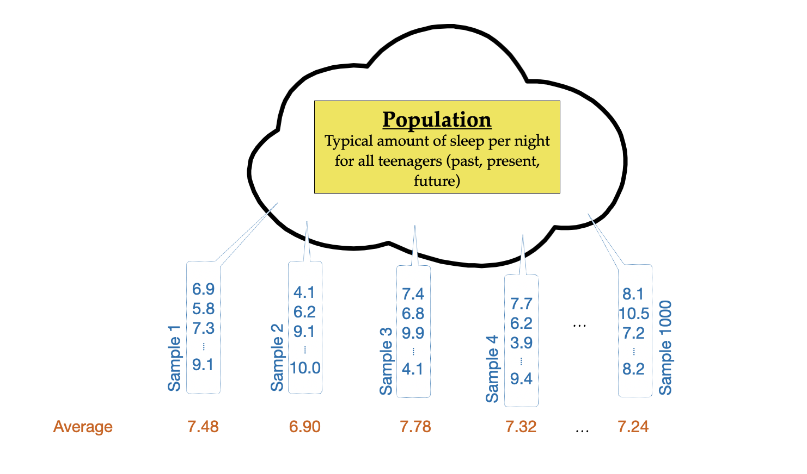

6 Bootstrapping: Using Simulation to Estimate the Uncertainty
In this chapter you will learn how to estimate the standard error of the mean from a single sample. To do this, you will employ a simulation method called bootstrapping.
6.1 Bootstrapping
The key question addressed by using any statistical method of inference is “how much variation is expected in a particular test statistic if one repeatedly draws random samples from the same population?” In the thought experiment we introduced in Chapter 5, the method for quantifying the uncertainty was to repeatedly sample from the population and measure the variation in the sample means. Recall that the quantification of the uncertainty (i.e., variation in the sample means) is referred to as the standard error.
Bradley Efron introduced the methodology of bootstrapping in the late 1970s as an alternative method to compute the standard error.
computer-based simulation framework to replace the inaccurate and complicated approximations that theoretical methods provide.1
Efron’s big discovery was that in the thought experiment, we could replace the population with a sample, and then randomly sample from that initial sample. He proved that using this methodology, you can obtain a good estimate of the sampling variation.
Because we need to randomly sample 75 observations out of the original sample (which itself only includes 75 observations), we need to sample WITH REPLACEMENT when we draw our re-samples. In this way, we mimic drawing random samples from a larger population without actually needing the larger population.
6.2 Importing the Teen Sleep Data
We will use the data in teen-sleep.csv to bootstrap a standard error of the mean. These data include the bedtime, wake-up time, and hours slept for a sample of \(n=75\) American teens in Grades 9–12.
We will prepare for the analysis by loading in the {tidyverse}, {ggformula}, and {mosaicCore} libraries and importing the teen sleep data. We will also load the {mosiaic} package.
library(ggformula)
library(mosaicCore)
library(mosaic)
library(tidyverse)
# Import data
teen_sleep <- read_csv("https://raw.githubusercontent.com/zief0002/epsy-5261/main/data/teen-sleep.csv")
# View data
teen_sleep6.3 Bootstrapping from the Teen Sleep Data
The process for computing the standard error via bootstrapping is:
- STEP 1: Randomly sample n observations from the observed sample of size n (with replacement) This is called a bootstrap sample or a re-sample.
- STEP 2: Compute the mean of the bootstrap sample.
- STEP 3: Repeat the first two steps in the process many times (say 1000 times), each time recording the mean.
- STEP 4: Find the standard deviation of these means (i.e., the standard error of the mean).
The computations we do will parallel each step of this process. As you learn how to do this, it is easy to get lost in the computing and forget why you are doing this. Remember, the end goal is to mimic the thought experiment so we can quantify the variation in the sample means.
6.3.1 STEP 1: Randomly sample 75 observations from the observed sample of size 75 teen sleep amounts (with replacement)
To randomly sample from a set of values we use the sample() function. We will need to specify the values we are sampling from (i.e., the original sample) as an input to the function. The data we want to randomly sample from is in a column called hrs_sleep inside the data object called teen_sleep. To specify a particular column in a data object we use the following notation: teen_sleep$hrs_sleep. We also need to set the number of observations to randomly sample, and tell this function that we are sampling with replacement.
Thus to draw a random sample of values from our data we use:
# Randomly sample from the hrs_sleep column located in the teen_sleep data object
# Draw 75 observations
# Sample with replacement
sample(teen_sleep$hrs_sleep, size = 75, replace = TRUE) [1] 7.583333 6.416667 7.750000 7.500000 4.416667 7.916667 8.833333
[8] 10.333333 6.083333 8.916667 8.250000 7.166667 6.750000 5.916667
[15] 6.833333 10.083333 7.583333 5.416667 7.916667 7.750000 4.833333
[22] 10.083333 9.166667 7.166667 4.666667 5.916667 4.666667 7.750000
[29] 7.916667 7.750000 9.166667 5.916667 5.916667 8.750000 7.166667
[36] 6.500000 4.583333 7.083333 7.916667 7.416667 9.166667 7.666667
[43] 6.916667 8.750000 9.916667 7.166667 4.666667 6.333333 9.166667
[50] 7.500000 7.750000 7.833333 8.083333 8.833333 8.250000 4.916667
[57] 6.416667 11.083333 9.916667 7.583333 7.083333 9.166667 10.083333
[64] 7.333333 7.750000 9.166667 8.083333 7.833333 9.083333 7.333333
[71] 4.416667 7.833333 7.583333 11.083333 11.083333This is akin to drawing a bootstrap sample from the original sample. Note that because we are drawing randomly, if you are trying this on your computer, you might get a different bootstrap sample than the one shown here. If you re-run this syntax, you will get a different bootstrap sample.
# Draw a second bootstrap sample of 75 observations
sample(teen_sleep$hrs_sleep, size = 75, replace = TRUE) [1] 8.083333 11.083333 7.833333 6.083333 7.500000 9.916667 7.750000
[8] 8.500000 8.583333 7.000000 7.916667 6.500000 6.916667 5.916667
[15] 7.833333 7.083333 9.166667 7.500000 10.333333 7.333333 6.083333
[22] 8.416667 8.583333 7.500000 7.583333 8.333333 8.416667 6.083333
[29] 8.750000 7.916667 5.416667 7.666667 4.666667 6.083333 7.166667
[36] 6.916667 11.083333 7.833333 7.916667 7.500000 7.750000 8.083333
[43] 6.083333 5.833333 9.083333 4.166667 7.166667 7.750000 5.916667
[50] 8.583333 4.833333 4.416667 6.416667 7.750000 9.083333 7.750000
[57] 6.666667 5.916667 6.500000 6.416667 7.583333 6.583333 8.583333
[64] 7.583333 6.083333 8.750000 7.000000 4.500000 7.916667 11.083333
[71] 4.583333 4.666667 8.333333 8.833333 7.0833336.3.2 STEP 2: Compute the mean of the bootstrap sample.
To compute the mean of a bootstrap sample, we are just going to embed our sample() syntax inside of the mean() function. For example,
# Draw a bootstrap sample of 75 observations and compute the mean
mean(sample(teen_sleep$hrs_sleep, size = 75, replace = TRUE))[1] 7.186667You could re-run this syntax to draw another bootstrap sample and compute the mean.
6.3.3 STEP 3: Repeat the first two steps in the process many times (say 1000 times), each time recording the mean.
To repeat a set of computations, we are going to use the do() function from the {mosaic} package. As a reminder, you will need the {mosiac} package loaded prior to using this function. The syntax for the do() function takes the following format:
do(N times) * {Computations to repeat}As an example, if we wanted to carry out our computations to draw a bootstrap sample and compute the mean 10 times, the synatx is:
# Draw a bootstrap sample of 75 observations and compute the mean
# Do this 10 times
do(10) * {mean(sample(teen_sleep$hrs_sleep, size = 75, replace = TRUE))}The computations are carried out 10 times and the results are recorded in a column (result) of a data object. Because we will ultimately want to compute on this data object, when we run this, we will want to assign the data into an object. Below, we draw 1000 bootstrap samples, each time computing the mean, and assign them into a data object called bootstrap_means.
# Draw a bootstrap sample of 75 observations and compute the mean
# Do this 1000 times
# Assign these into an object called bootstrap_means
bootstrap_means <- do(1000) * {mean(sample(teen_sleep$hrs_sleep, size = 75, replace = TRUE))}
# View the results
bootstrap_means6.3.4 STEP 4: Find the standard deviation of these means (i.e., the standard error of the mean).
Remember our goal was to compute the standard error, which quantifies the uncertainty in the sample mean estimates that is due to sampling variation. Before we do that, we will visualize the distribution of bootstrapped means.
# Create a density plot of the bootstrapped means
gf_density(
~result, data = bootstrap_means,
xlab = "Mean value",
ylab = "Density"
)The distribution of bootstrapped means is unimodal and symmetric. This indicates that the standard deviation is a reasonable numeric summary of the variation. Again, since the cases in the distribution are means (summary measures), the standard deviation is referred to as a standard error. To compute the standard error, we use df_stats():
# Compute SE
df_stats(~result, data = bootstrap_means)Here the standard error (found in the sd column) is 0.17.
The distribution of bootstrapped means should be centered at the value of the original sample mean. In our teen sleep example, the original sample had a mean of 7.4. This value is roughly at the center of the distribution in Figure 6.3. This can be a self-check when you create a bootstrap distribution.
6.4 References
Raspe, R. E. (1948). Singular travels, campaigns and adventures of Baron Munchausen (J. Carswell, Ed.). Cresset Press.
The nomenclature of bootstrapping comes from the idea that the use of the observed data to generate more data is akin to a method used by Baron Munchausen, a literary character, after falling “in a hole nine fathoms under the grass,…observed that I had on a pair of boots with exceptionally sturdy straps. Grasping them firmly, I pulled with all my might. Soon I had hoist myself to the top and stepped out on terra firma without further ado” (Raspe, 1948, p. 22)↩︎